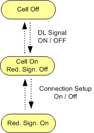

The main connection states in reduced signaling mode are described in the following table.
Cell state | Reduced signaling state | Description |
|---|---|---|
"Off" | "Off" | No signal transmission / no connection to the UE |
"On" | "Off" | The R&S CMW provides a downlink signal containing the following physical channels: P-CPICH, P-SCH, S-SCH, P-CCPCH and PICH. The UE can synchronize to this downlink signal. |
"On" | "On" | The physical channels relevant during a connection are provided by the downlink signal. The configured RF input connector is active, so that the uplink signal can be received. It is possible to set up a test mode connection. Note that for HSPA test mode "Direction" = "HSPA" HSDPA and HSUPA downlink channels are only enabled when the R&S CMW has successfully completed synchronization to the UL signal. |
Control commands initiated by the R&S CMW switch between the listed states. The following figure shows possible state transitions.

- "Switching Channels On/Off":
Displayed during transition from state "Reduced Signaling = Off" to "Reduced Signaling = On" and vice versa